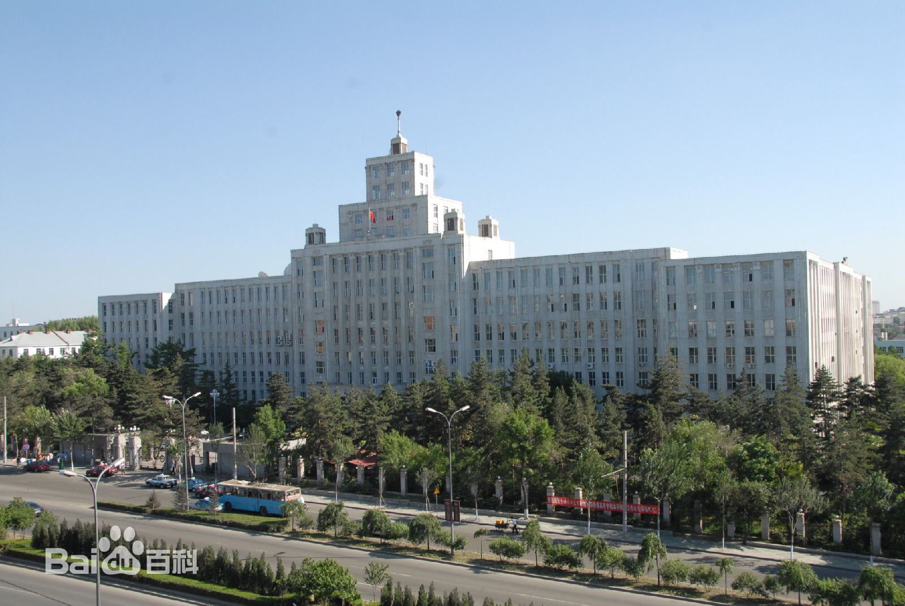

一、哈尔滨工业大学
哈尔滨工业大学隶属于工业和信息化部，是由工信部、教育部、黑龙江省共建的国家重点大学，是首批进入国家“211工程”和“985工程”建设的若干所大学之一。1920年，中东铁路管理局为培养工程技术人员创办了哈尔滨中俄工业学校——即哈尔滨工业大学的前身，学校成为中国近代培养工业技术人才的摇篮。新中国成立后，哈尔滨工业大学成为全国学习前苏联高等教育办学模式的两所大学之一，此后学校一直得到国家的重点建设。2000年，同根同源的哈尔滨工业大学、哈尔滨建筑大学合并组建新的哈尔滨工业大学。如今，学校已经发展成为一所特色鲜明、实力雄厚，居于国内一流水平，在国际上有较大影响的多学科、开放式、研究型的国家重点大学。
二．哈尔滨工程大学
哈尔滨工程大学，前身“中国人民解放军军事工程学院”（世称“哈军工”），陈赓大将为首任校长、正大军区级单位，1970年哈军工被肢解，以海军系、原子系、导弹系战术导弹分部为基础，组建哈尔滨船舶工程学院（简称“哈船舶”），1978年再次被评为全国重点大学，1994年更名为哈尔滨工程大学。三、黑龙江大学
黑龙江大学(Heilongjiang University)简称黑大(HLJU)，坐落于北国冰城哈尔滨，是教育部、国家国防科技工业局与黑龙江省人民政府重点共建高校，国家首批“中西部高校基础能力建设工程”、“卓越法律人才教育培养计划”、“卓越新闻传播人才教育培养计划”、“海外高层次人才引进计划(千人计划)”入选高校，全国17所国家教育体制改革试点学院所在高校之一。四、东北林业大学
东北林业大学（Northeast Forestry University）学校前身东北林学院创建于1952年，以浙江大学农学院森林系和东北农学院森林系为基础建立，1985年，更名为东北林业大学。